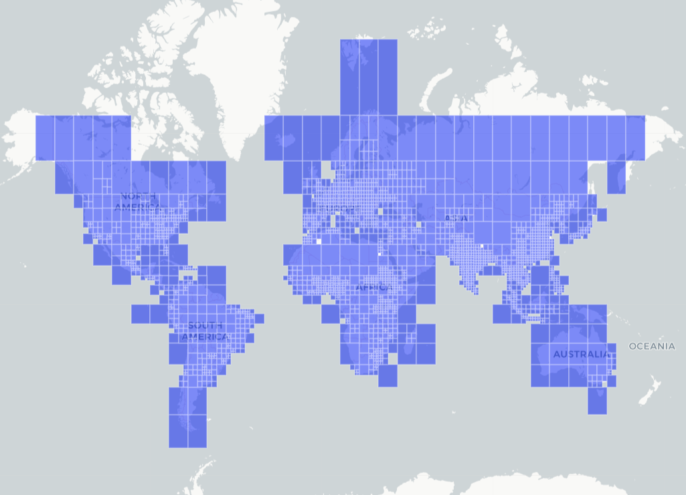
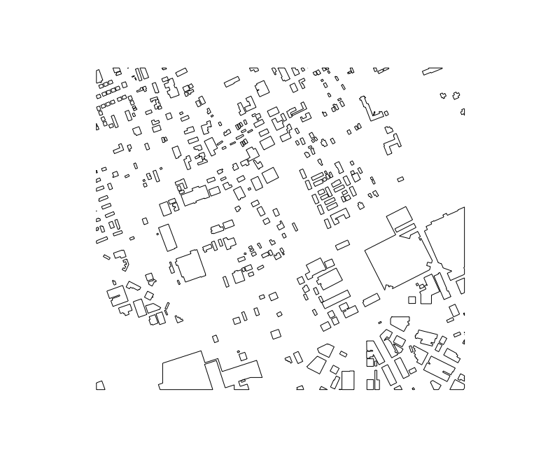
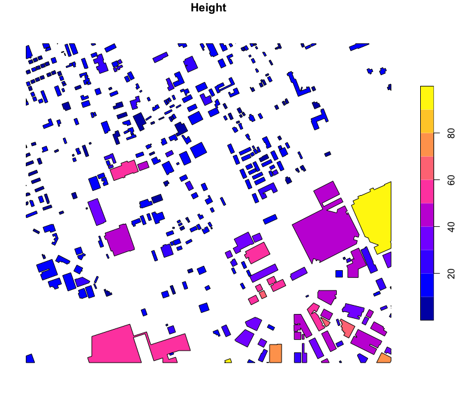
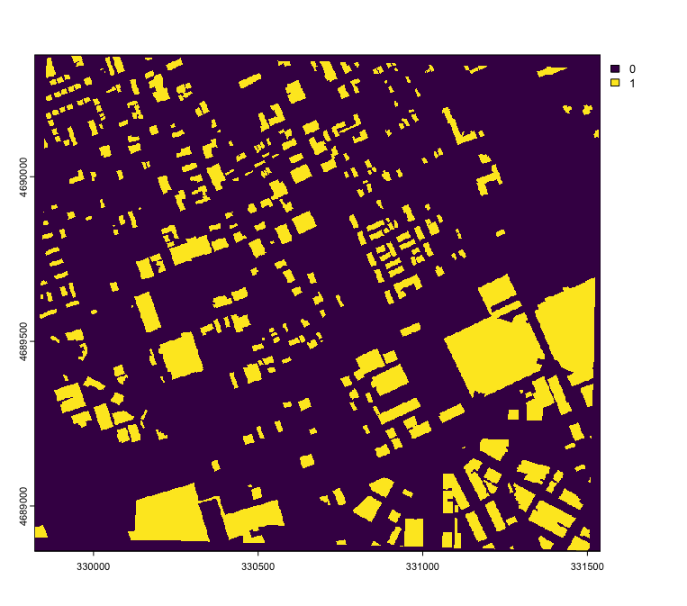
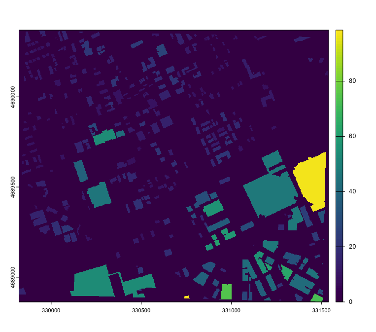
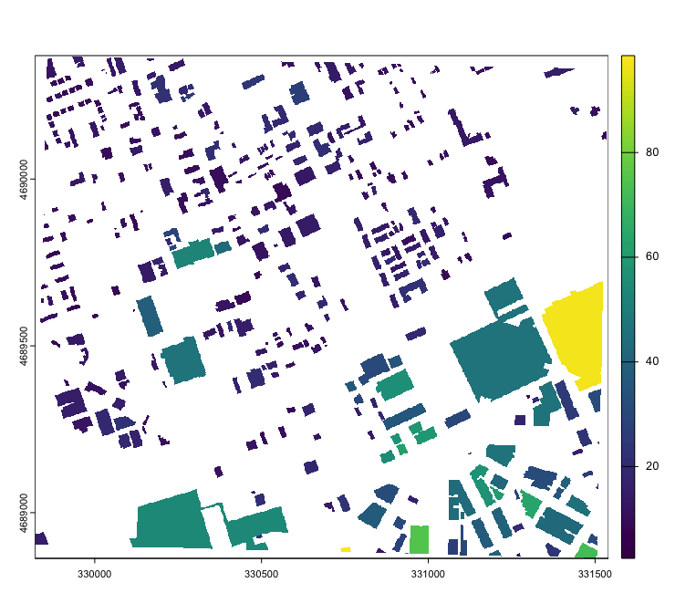
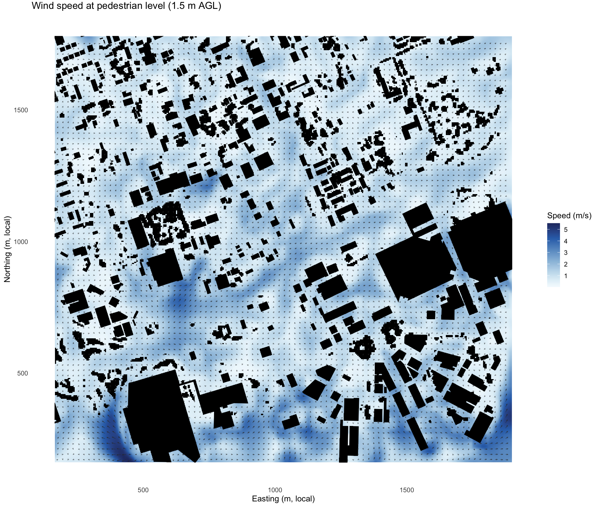
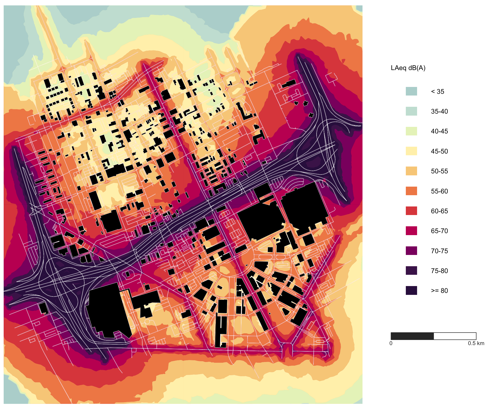
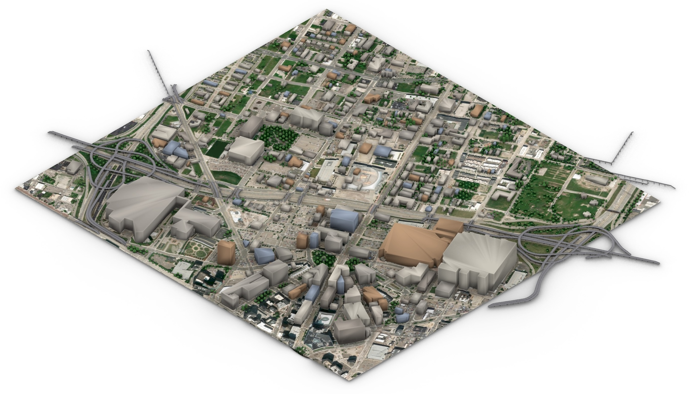
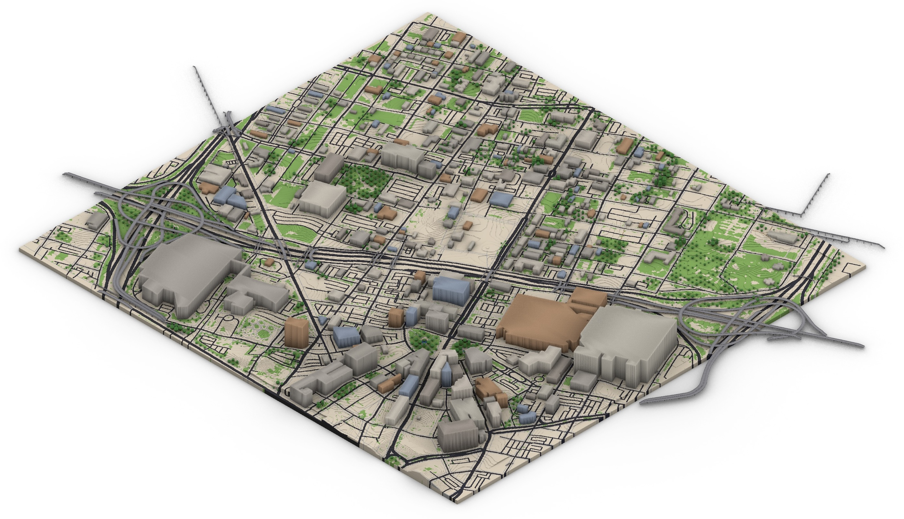

Access and analyze the Building Footprint Datasets.
Overview
The gloBFPr package allows R users to search, download, and process global building footprint tiles with associated height information, derived from the 3D-GloBFP dataset published by Che et al. (2024, 2025) and GlobalBuildingAtlas dataset by Zhu et al. (2025). With the building data, users can compute complex metrics of urban morphology and simulate urban environments about thermal and acoustic conditions. The package will look to include more global Building Dataset in the future.

Features
- Access tiled metadata of 3D-GloBFP dataset and search tiles by bounding box (BBOX) or area of interest
- Download only the necessary files and retrieve building polygons and height attribute
- Generate rasters of binary presence or graduated height and output spatial data in sf or terra raster format
- Compute morphological, urban context, and greenspace accessibility metrics at an individual-building level
- Aggregate individual-building metrics into block-level summaries for city-scale analysis
- Analyze shadow and radiation using building data for the analysis of urban heat conditions
- Prepare screening-level urban road-noise modelling layers from building height, OSM roads, canopy height, and greenspace data, and run the integrated NoiseModelling workflow to produce noise maps
- Prepare and run pedestrian-level wind simulations with OpenFOAM
Installation
Install the development version:
# Install devtools if needed
install.packages("devtools")
# Install from GitHub
devtools::install_github("billbillbilly/gloBFPr@dev")The package will be on CRAN soon.
External software
Two gloBFPr workflows call out to external command-line software rather than bundling it as an R dependency. Both are optional — only install what you need.
OpenFOAM (via Docker)
prepare_foam_case() + run_openfoam_docker() run pedestrian-level wind simulations with OpenFOAM inside a Docker container, so no local OpenFOAM install is required. The current development workflow uses buoyantBoussinesqPimpleFoam with URANS kOmegaSST for wind cases.
- Install Docker Desktop (macOS/Windows) or Docker Engine (Linux), and make sure it is running.
- No image pull step is needed —
run_openfoam_docker()pulls the default image (opencfd/openfoam-run:2506) automatically on first use. To pre-pull it yourself:docker pull opencfd/openfoam-run:2506. -
macOS only: Docker Desktop shares
/Users,/Volumes, and/tmpby default. Put your case directory somewhere under your home folder (e.g.prepare_foam_case(case_dir = "~/openfoam_demo", ...)) rather thantempdir()//var/folders, which Docker cannot see. If you get a “No such file or directory” or empty-mount error, add the case directory under Docker Desktop → Settings → Resources → File Sharing, then Apply & Restart. - Verify Docker is reachable before running a case:
docker info.
NoiseModelling
get_noise_map(x = buildings, run = TRUE) (and prepare_noisemodelling_inputs() with run = TRUE) runs the official NoiseModelling headless WPS scripts, a separate GPL-3-licensed Java application (gloBFPr itself remains MIT-licensed; NoiseModelling is only invoked, not bundled).
- Install Java 11–21 (Java 17 recommended) and make sure it is on
PATHor set asJAVA_HOME, or pass a specific installation via thejavaargument. - You do not need to install NoiseModelling yourself: if no local copy is found,
get_noise_map()downloads the official headless runner (default version5.0.1) into an R user cache directory the first time it is needed. - To install it ahead of time, or reuse an existing install, call
install_noisemodelling()directly, or pointgloBFPrat an existing copy withoptions(gloBFPr.noisemodelling.path = "/path/to/NoiseModelling_without_gui-5.0.1")or theNOISEMODELLING_HOMEenvironment variable.
API keys
Two functions groups require a free API key from a third-party data provider. Everything else in the package (footprint search/download, morphology, block analysis, NoiseModelling, OpenFOAM) works without any key.
OpenTopography (elevation data)
Required by any function that downloads a digital elevation model: get_bgvi(), svf(), get_shadow_footprint(), get_shadow_height(), get_radiation(), get_fused_dsm(), get_3d_world(terrain = TRUE), and the opentopo_key argument of prepare_openfoam_inputs(), get_noise_map(), and prepare_noisemodelling_inputs().
- Register for a free account and request an API key at https://portal.opentopography.org/requestService?service=api.
- Pass the key directly via each function’s
key/opentopo_keyargument, e.g.get_bgvi(buildings, key = "YOUR_KEY"). - The USGS 3DEP 1 m/10 m dataset is currently restricted to academic accounts. Non-academic users can request an enterprise key by emailing
info@opentopography.org. See OpenTopography’s Terms of Use for appropriate use of the API.
You can avoid needing a key for get_3d_world() by setting terrain = FALSE (flat ground), or by supplying a pre-loaded dem/canopy_height raster (e.g. the bundled globfp_example_dem) instead of downloading one.
Copernicus Climate Data Store (ERA5 weather data)
Required by get_era5_met(), which fetches ERA5 reanalysis wind/temperature data as boundary conditions for prepare_foam_case().
- Register for a free account at https://cds.climate.copernicus.eu.
- Copy your personal access token from your CDS user profile page.
- Set it once per session with
Sys.setenv(CDS_API_KEY = "your-token-here"), or store it in~/.Renvironso it loads automatically, or pass it directly viaget_era5_met(cds_key = "your-token-here"). -
Accept the ERA5 dataset licence (one time, in a browser) — see below. Without this, requests fail with a
403 permission deniedeven though the token is valid.
This requires the ecmwfr package (install.packages("ecmwfr")), which get_era5_met() uses to submit the CDS request. Version 2.0.0 or later is needed: the legacy CDS was retired in 2024 and older ecmwfr versions cannot authenticate with current tokens.
Accepting the ERA5 licence
CDS gates every dataset behind a per-account licence acceptance that the API cannot perform for you. This is the single most common setup failure.
- Open https://cds.climate.copernicus.eu/datasets/reanalysis-era5-single-levels?tab=download#manage-licences
- Scroll to the bottom of the page, past the variable and date selectors, to “Terms of use”.
- Accept the listed licences (typically the Copernicus licence and an ERA5-specific one).
- Re-run
get_era5_met().
The symptom if you skip this:
Error: permission denied ... required licences not accepted ... 403Which variables are requested
You do not need to tick any checkboxes on the CDS download form — those only build a manual download, and the web UI selection is ignored by the API. get_era5_met() specifies its own variables in the request:
| CDS field | Value | Used for |
|---|---|---|
| Product type | Reanalysis |
— |
| Variable | 10m_u_component_of_wind |
inlet_velocity[1] (eastward, m/s) |
| Variable | 10m_v_component_of_wind |
inlet_velocity[2] (northward, m/s) |
| Variable | 2m_temperature |
T_ref (ambient air temperature, K) |
| Variable | skin_temperature |
optional T_skin ground-temperature estimate (K) |
Note that skin_temperature is not in the form’s “Popular” block; it appears under “Temperature and pressure”. Again, this matters only if you are downloading manually.
Notes on ERA5 data
- Requests are queued server-side. A single-hour, small-area request usually returns in a minute or two, but can take longer under load.
get_era5_met()blocks while polling, so it may appear to hang when it is only waiting. - Downloads are cached in
cache_dir(defaulttempdir()), so repeated calls for the same location and hour are instant. - ERA5 has ~28 km spatial resolution and represents a grid-cell average. Local effects (urban heat islands, lake breezes, valley channelling) can cause site-level conditions to differ by 20–50%. Use it to set the synoptic background condition; supplement with a nearby weather station for high-stakes work.
-
datetimeis interpreted as UTC and rounded to the nearest full hour.
Usage
- Load
- Search and download data by bounding box
bbox <- c(-83.065644,42.333792,-83.045217,42.346988)
buildings_list <- search_3dglobdf(bbox = bbox,
out_type = "all",
# mask = TRUE,
cell_size = 1)This will return a list containing: - poly: an sf object of 3D building footprints - binary: a binary raster of building presence - graduated: a raster representing building height in meters
Specify cell_size = 1 to generate raster layers with 1-meter resolution, ensuring detailed spatial representation of building geometries within the defined area of interest.
Setting mask = TRUE ensures the height raster is masked by the building footprints.
Output examples:





- Calculate metrics
| Categories | Metrics | Code | Concept |
|---|---|---|---|
| Morphology | Ground area | g_area |
Horizontal footprint area of the building |
| Perimeter | pmeter |
Total boundary length of the footprint | |
| Vertical surface | v_surf |
Estimated surface area of building walls | |
| Total surface | t_surf |
Sum of vertical surface and ground area | |
| Volume | vol |
Approximate building volume (area × height) | |
| Object-oriented bounding box volume | obb_vol |
Volume of the smallest rotated bounding box containing the building | |
| Perimeter-area ratio | pa_ratio |
Indicator of compactness and shape irregularity | |
| Rectangularity | rec |
Ratio of area to its minimum bounding rectangle | |
| Fractality | fra |
Complexity of surface based on volume-to-surface ratio | |
| Hemisphericality | hem |
Deviation from ideal hemisphere volume | |
| Convexity | cnv |
Ratio of footprint area to its convex hull area | |
| Cuboidness | cbn |
Degree to which the object resembles a cuboid | |
| Mean Euclidean distance to centroid | me_dist |
Average distance from footprint vertices to centroid | |
| Mean pairwise distance | mp_dist |
Average distance between all footprint vertex pairs | |
| Volume exchange ratio | vol_exch |
Volume-to-surface ratio indicating massiveness | |
| Elongation ratio on X direction | elo_x |
Shortest horizontal extent divided by height | |
| Elongation ratio on Y direction | elo_y |
Longest horizontal extent divided by height | |
| Elongation ratio on Z direction | elo_z |
Height relative to the maximum horizontal extent | |
| Neighbor | Number of adjacent buildings | n_count |
Count of nearby buildings based on proximity and Voronoi adjacency |
| Mean distance from the building | m_ndist |
Average distance to neighboring buildings | |
| Minimum distance from the building | min_ndist |
Closest neighboring building distance | |
| Maximum distance from the building | max_ndist |
Farthest neighboring building distance | |
| Standard deviation of distances | sd_ndist |
Variation in distances to neighboring buildings | |
| Greenery | Distance to the nearest green space | dng |
Distance from building centroid to closest vegetation pixel, in a straight line or along the real street network (network = "osm") |
| Distance measure used | dng_method |
Whether dng was measured along the street network or fell back to a straight line |
|
| Mean Green View Index (GVI) | mean_gvi |
Average proportion of visible greenery in viewshed | |
| Bottom Green View Index (GVI) | bottom_gvi |
GVI from the bottom viewpoint, 1.7 m above ground | |
| Top Green View Index (GVI) | top_gvi |
GVI from the top viewpoint; equals bottom GVI for short buildings | |
| Minimum of Green View Index (GVI) | min_gvi |
Lowest GVI across all floor viewpoints (if floor = TRUE) |
|
| Maximum of GVI | max_gvi |
Highest GVI across all floor viewpoints (if floor = TRUE) |
|
| Standard deviation of GVI | sd_gvi |
Variation in greenery visibility across building height (if floor = TRUE) |
|
| Estimated floors | estimated_floors |
Estimated number of floors based on building height (if floor = TRUE) |
- Simulate urban environments
Wind flow with OpenFOAM
The current development workflow writes terrain-aware, canopy-aware wind cases for OpenFOAM and runs them through Docker.

data(globfp_example)
buildings_list <- list(poly = globfp_example, binary = NULL, graduated = NULL)
foam_inputs <- prepare_openfoam_inputs(
case_dir = file.path(path.expand("~"), "openfoam_demo"),
buildings_list = buildings_list,
height_col = "Height",
include_buildings = TRUE,
overwrite = TRUE
)
case_files <- prepare_foam_case(
case_dir = foam_inputs$case_dir,
stl_file = foam_inputs$files$building_stl,
domain = foam_inputs$domain,
inlet_velocity = c(5, 0, 0),
z_ref = 10,
base_cell_size = 5,
sim_hours = 0.5,
overwrite = TRUE
)
run_openfoam_docker(foam_inputs$case_dir, wait = TRUE)
wind_map <- read_foam_pedestrian_slice(foam_inputs$case_dir, resolution = 2)
plot_foam_map(wind_map, layer = "U_mag", legend_title = "Speed (m/s)")Use get_era5_met() when you want ERA5 wind and temperature boundary conditions, and prepare_foam_geometry() when you want DEM-derived terrain and canopy drag included in the case geometry.
Road-noise mapping
get_noise_map() prepares building, road, ground-effect, receiver, and optional barrier layers for NoiseModelling. With run = TRUE, it can also launch the headless NoiseModelling workflow.

noise <- get_noise_map(
x = buildings_list$poly,
run = FALSE,
out_dir = file.path(tempdir(), "noise_demo"),
receiver_spacing = 10
)
plot_noise_map(noise)- 3D reconstruction


library(gloBFPr)
data(globfp_example)
buildings <- globfp_example
data(globfp_example_dem)
data(globfp_example_canopy_height)
world <- get_3d_world(
x = buildings,
terrain = TRUE,
dem = rast(globfp_example_dem),
canopy_height = rast(globfp_example_canopy_height),
canopy = NULL,
roads = "overture",
water = "overture",
greenspace = TRUE,
basemap = TRUE,
facade_palette = TRUE,
out_dir = file.path(tempdir(), "world_textured"),
quiet = FALSE
)
world_vox <- get_3d_world(
x = buildings,
terrain = TRUE,
dem = rast(globfp_example_dem),
canopy_height = rast(globfp_example_canopy_height),
canopy = NULL,
roads = "overture",
water = "overture",
greenspace = TRUE,
facade_palette = TRUE,
all_vox = TRUE,
vox_size = 1,
out_dir = file.path(tempdir(), "world_vox")
)Note
The downloading process may take some time, depending on the number and size of building footprint tiles.
This implementation relies on the current structure of the dataset as hosted on Figshare. It may break if the dataset owner changes the file organization or metadata format.
Please read the function documentation carefully. The dataset may require proper citation when used.
Noise preparation functions use OSM road class to infer default traffic speeds and vehicle volumes when observed traffic counts are unavailable. These defaults are intended for screening-level or scenario-based analysis and should be replaced with local traffic observations for calibrated noise maps.
To run the integrated NoiseModelling workflow, call get_noise_map(x = buildings, run = TRUE). Roads are downloaded from OSM using the building extent unless a road layer is supplied, and greenspace can be retrieved with datasource_greenspace. See External software for how to set up Java and NoiseModelling (and OpenFOAM, for the wind workflow).
Other similar approaches
- overturemapsr: Fetching OvertureMaps data from S3 and converting it to sf objects for spatial analysis
- UrbanMapper: Spatial join & enrich any urban layer given any external urban dataset of interest
- 3DBM: Elevating geometric analysis for urban morphology
- greenR: Quantification, analysis, and visualization of urban greenness within city networks using OpenStreetMap data
- GreenExp_R: Toolkit to estimate multidimensional aspects of greenness and nature exposure (availability, accessibility, visibility) using geospatial data and models
- momepy (Python): Urban morphometrics toolkit for quantitative analysis of urban form from building footprints and street networks
- OSMnx (Python): Download and analyze geospatial data from OpenStreetMap, including building footprints and street networks
- UMEP / SOLWEIG (Python): Urban Multi-scale Environmental Predictor toolkit; SOLWEIG models shadow patterns, sky view factor, and mean radiant temperature from building digital surface models
- VoxCity (Python): One-stop framework that integrates open geospatial data (building heights, tree canopy, land cover, terrain) into grid-based 3D/voxel city models and runs urban environment simulations (solar radiation, view index)
Issues and bugs
If you discover a bug not associated with connection to the API that is not already a reported issue, please open a new issue providing a reproducible example.